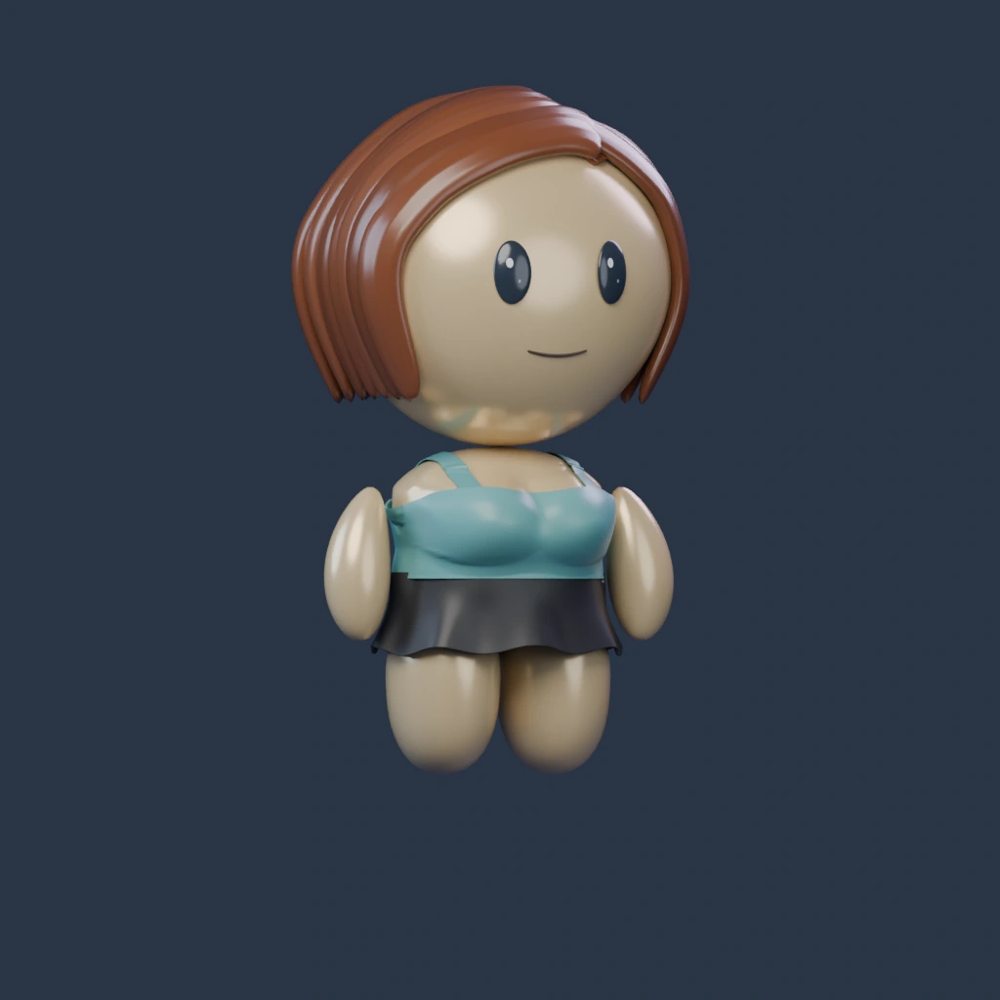
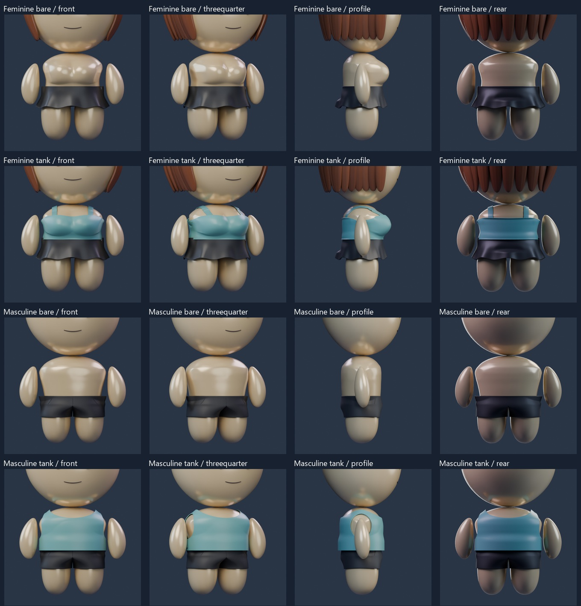
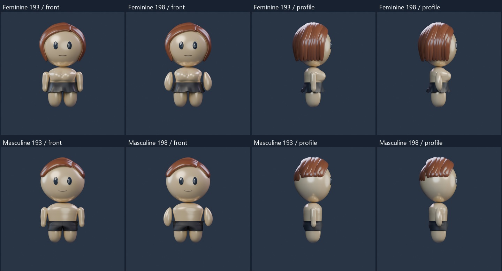

ARM REVIEW ·198
Revision178 arms restored
The saved Swept floating arms from178, with their original size, shape, bend and placement. The recent shoulder-integration and chest trials are excluded. This focused review uses Tank and the current head, face, skin palette and fixed3D lighting.

Rendered referenceLoad, rotate and zoom the restored arms.
This restores the arms only. Chest contours, lower abdomen and inner-leg split remain open work; rejected194–197 sculpts have not been adopted. The complete wardrobe is preserved in193.
Existing face and color options
Restored arms: both builds

Before193 and restored arms

Verification and recovery
Saved native scenes reopened. Arm vertex positions and native placement match the selected178 donors; the current skin finish is used. Technical verification does not imply owner approval of the remaining body work.193 is preserved as the complete recovery preview.